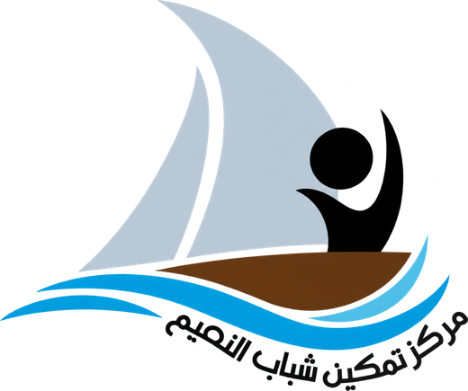

لجنة
مركز النعيم الثقافي والتراثي
ذاكرة حية للنعيم
نجمع تاريخ النعيم وموروثها في مكان واحد: صور البيوت والفرجان، ووثائق العائلات، وحكايات البحر والقلافة، وأصوات من عاشوا تلك الأيام. وهذه الذاكرة يكتبها أهل النعيم أنفسهم.

لجنة منبثقة من مركز تمكين شباب النعيموتحت رعايته
عن اللجنة
لكل بيت في النعيم حكاية، ولكل حكاية مكان في هذه الذاكرة.
لجنة مركز النعيم الثقافي والتراثي لجنة مجتمعية منبثقة من مركز تمكين شباب النعيم وتحت رعايته، تأسست بعد أن تبنّى المركز مشروع حفظ ذاكرة النعيم.
تعمل اللجنة على توثيق تاريخ المنطقة ومناطقها الخمس، وحفظ ما تحتفظ به البيوت من صور ووثائق وأدوات وروايات، وتقديمها للأجيال القادمة في صورة منظمة يُرجع إليها.
ويستند عمل اللجنة إلى دراسة تفصيلية للمشروع، ويسعدنا أن يطّلع عليها المهتمون ويبدوا ملاحظاتهم ومقترحاتهم.
محاور العمل
ما الذي نحفظه؟
القلافة
صناعة السفن الخشبية وأدواتها وأسماء من عملوا فيها.
البحر ومهنه
البحارة والصيد والغوص وكل ما ارتبط بالساحل.
الحرف التقليدية
النجارة والحرف اليدوية التي عاش منها أهل النعيم.
تاريخ النعيم
نشأة المنطقة وفرجانها ومساجدها ومعالمها وتحولاتها.
أصوات الكبار
روايات شفهية من كبار السن، تُسجَّل بإذنهم.
الصور والوثائق
أرشيف للصور القديمة والمستندات والمخطوطات العائلية.
شخصيات النعيم
من خدموا المنطقة وتركوا أثراً في حياة أهلها.
الحياة الاجتماعية
العادات والمناسبات وروابط التكافل بين الأهالي.
المناطق الخمس
خمس حبات… في مسبحة واحدة
لكل منطقة طابعها وحكايتها، ويجمعها خيط واحد اسمه النعيم. اختر منطقتك.
النعيم الوسطي
ما الذي تحفظه ذاكرتك عن النعيم الوسطي؟ بيت، أو فريج، أو مسجد، أو مأتم، أو وجه تتذكره؟ شاركنا لتكتمل حكاية منطقتك.
شارك من النعيم الوسطيكيف تشارك
من متابع… إلى شريك في الذاكرة
اختر ما لديك
صورة قديمة، أو وثيقة، أو أداة، أو حكاية سمعتها من كبار العائلة.
جهّز رسالتك
املأ النموذج أدناه، فيجهّز لك نص المساهمة مرتباً.
أرسلها لنا
انسخ النص وأرسله مع الصور عبر الرسائل الخاصة.
تُحفظ باسمك
تدخل مساهمتك أرشيف اللجنة، وتُنشر منسوبة إليك إن أذنت بذلك.
أرسل مساهمتك
جهّز رسالتك في دقيقة
املأ الحقول، ثم انسخ النص الجاهز وأرسله مع صورك عبر الرسائل الخاصة على الإنستغرام. هذا النموذج لا يرسل شيئاً بنفسه، ولا يحفظ بياناتك.
تُرسل المساهمات إلى حساب لجنة مركز النعيم الثقافي والتراثي على الإنستغرام:
@naim.yc.heritage